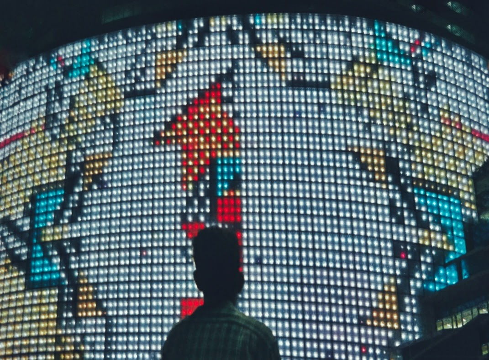

My Projects

"Sometimes one waits too long for the perfect moment before snapping the picture. You never realize that you needed was to change perspective." Miguel Syjuco
"You can look at a picture for a week and never think of it again. You can also look at a picture for a second and think of it all your life." Joan Miro.
"When you photograph people in color, you photograph their clothes. But when you photograph people in Black and white, you photograph their souls!." Ted Grant.